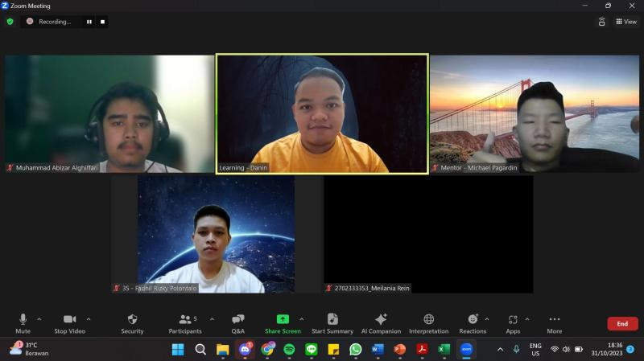
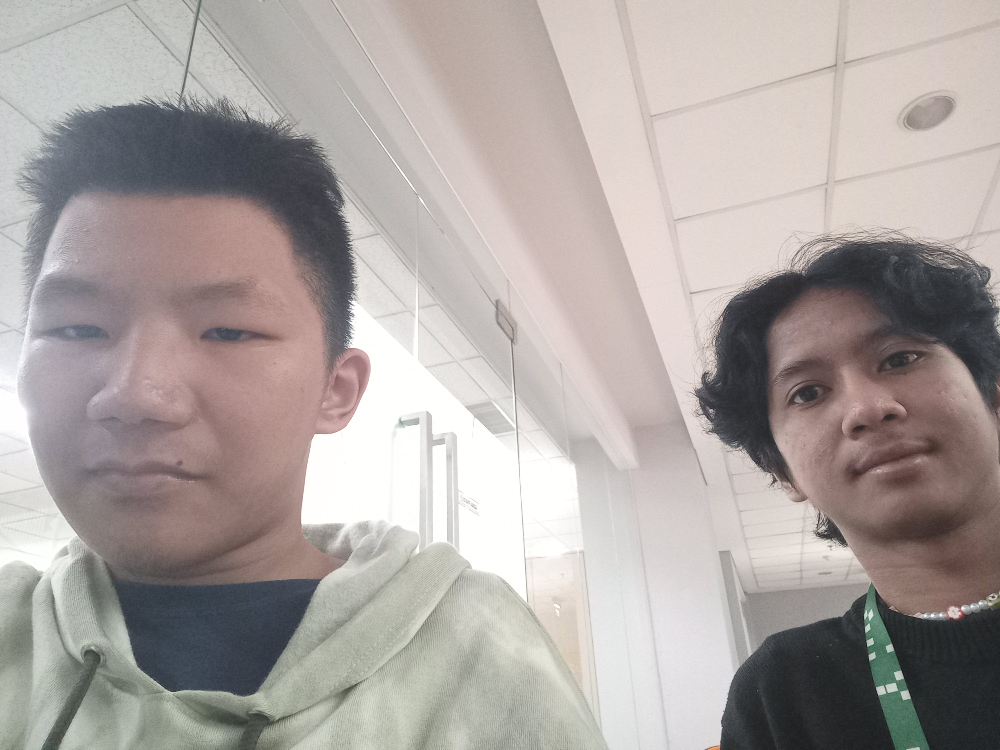
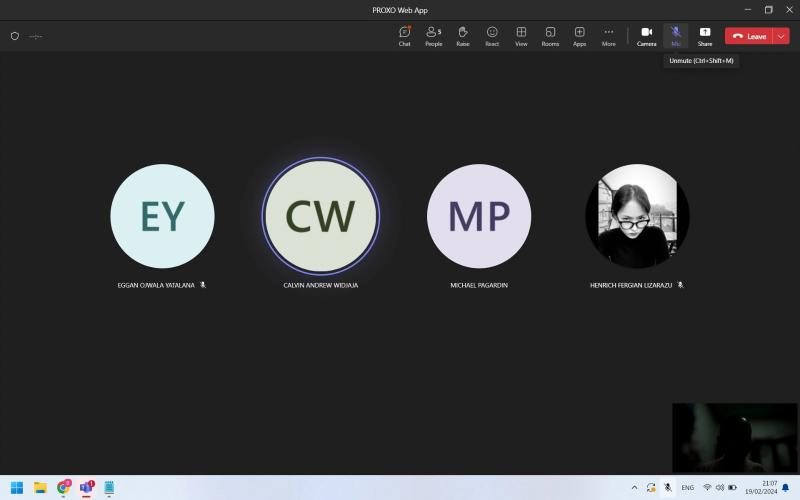
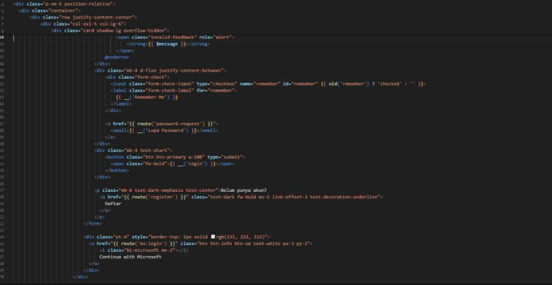
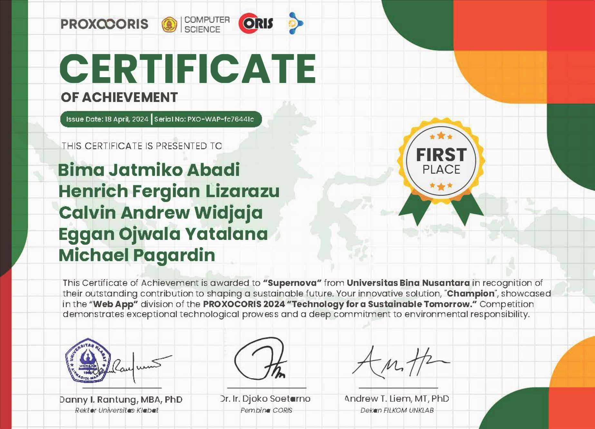
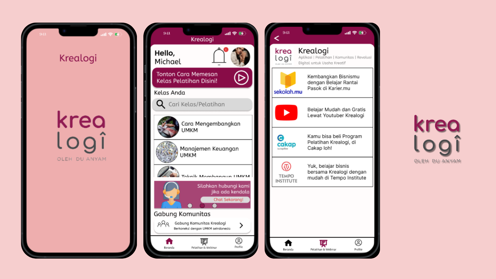

About
My name is Michael Pagardin, i'm a second-year student at Binus University. I am now pursuing a Bachelor degree in Information Systems, and later pursuing a Master degree in Information Systems Management. I am passionate about learning new things related to IT, such as UI/UX Design, Web Development, System Analysis, Data Analysis and much more. In my academic journey, I am now working as a Education Mentor at Binus Student Learning Community, where i teach lessons about Information Systems to first-year students, such as Java Programming, accounting, database systems, and much more. I also work as a project member at Information Systems Laboratory where i learn about web programming and working in a big project with my team as a web developer. I also work as an activist in Binus Student Learning Community and Komunitas Mahasiswa Katolik, where i have developed new skills such as professional communication skills in teams, leadership, public speaking, project management, problem solving. I am skilled in using some IT applications, such as Figma, Eclipse, Visual Paradigm, XAMPP, SQL, Excel.
Experiences
1. Education Mentor | Binus Student Learning Community


Sep 2023 - Now
As a mentor, i teach some first-year students about Information Systems lessons, such as Java Programming, Accounting, Database and much more. I conducted
meeting with mentees every week to help the students learn and get a high grade in their lessons.
Skills Gained: Teaching | Communication | Problem Solving | Time Management | Student Engagement
2. Information Systems Project Member | Information Systems Laboratory


Jan 2024 - Now
- Attended weekly sessions to learn about web development using Laravel, HTML, CSS, JQuery, PHP, VSCode and conduct a research using SmartPLS, SPSS
- Being involved in web development project competitions
- Contribute in a go-live web development project with other members as a fullstack web developer team & UI Designer using Laravel MVC
Recent Project: a BASIC (Business and System Innovation Challange) Website that is used to register a competition team starting this year
BASIC: Business and System Innovation Challenge is an international scale case:solving competition organized by School of Information Systems, Binus University. This competition will facilitate students (undergraduate program) from various design and technology backgrounds to demonstrate their problem solving and design ability to propose solutions for digital technology issues.
Skills Gained: Front End Development | HTML | CSS | Javascript | Laravel | PHP
3. Project Based Internship: UI/UX Designer FundEx x Rakamin
Aug - Sep 2023
In this internship, i learn about how to be a good UI/UX Designer, how to make a good UI Design, how to make a design system and responsive design. In the final task, i made a redesign of Fundex website's landing page and makea responsive UI Design of it.
Project:
Redesigning the Fundex's website landing page using Figma (moodboard, wireframe, design system and hi fi design + protoyping)
View Project
Skills Gained: Figma | UI/UX Design |
Awards
Champion of PROXO-CORIS Competition 2024 "Technology for Sustainable Tommorow"

April 2024
Winner of Web App Development in PROXO-CORIS competition held by Universitas Kablat
Projects
User Experience Research & Design: Krealogi App

Designing a new Krealogi App. The main problem is in the old Krealogi app, users are having trouble in using the app.
View Figma
Skills: Figma | UX Design | UX Research
Information Systems Analysis and Design: GoFishing App

This project was created for Information Systems Analysis and Design course, which also involves Object Oriented approach; We created UML diagrams using Visual Paradigm 17.1. This project includes activity diagram, use case diagrams, domain class diagram, state machine diagram, use case descriptions, system sequence diagrams, and CRUD matrix.
View Figma
Skils: System Analysis | UML | Visual Paradigm